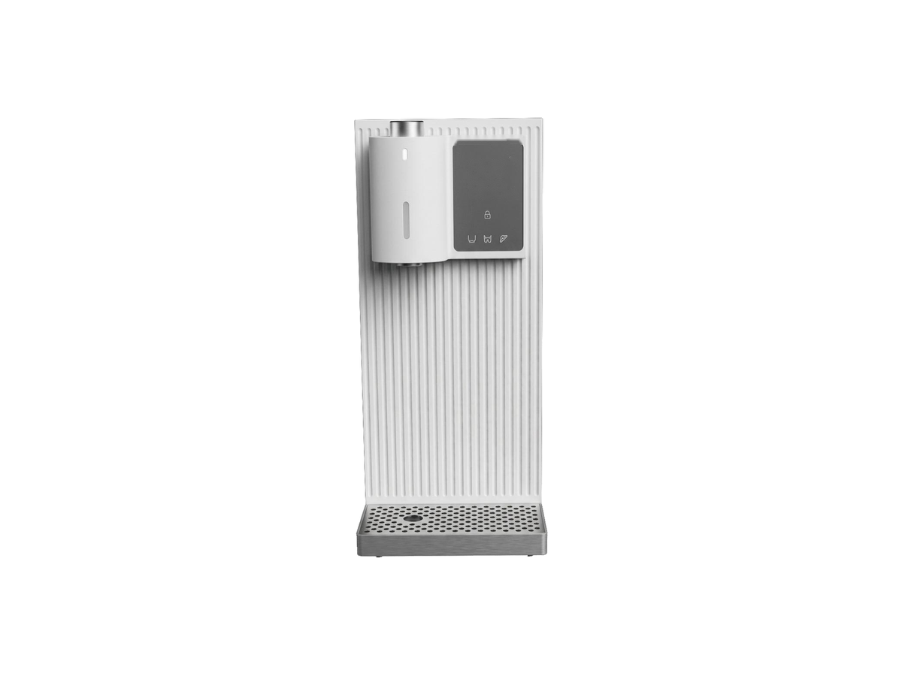

Countertop
CountertopRP-C07
Pemurni RO dengan teko pemanas
SKU: RP-C07
MOQ: Konfirmasikan saat bertanya
Beranda/Produk/Sistem Countertop/ RP-C01

Sistem Countertop
RO pemanas instan — tiga varian. RP-C01 (teko pemanas) memimpin seri ini.
RP-C01 dan RP-C02 adalah dua konfigurasi dari RO pemanas instan yang sama dan berbagi nilai spesifikasi di bawah ini. Keduanya hanya berbeda pada modul sisi kanan: RP-C01 memiliki teko pemanas silinder; RP-C02 memiliki tangki pendingin elektronik transparan yang lebih tinggi yang menambahkan air dingin 15 °C dan lebih lebar 40 mm (380 × 210 × 390 mm). Varian ketiga yang ringkas untuk air murni panas bergabung dalam keluarga yang sama, dengan tangki lebih kecil (4,5 / 1 L) dan bodi lebih sempit (340 × 170 × 385 mm); lihat perbandingan varian di bawah untuk spesifikasi lengkapnya. Spesifikasi dikonfirmasi per model dan pesanan.
Tegangan / frekuensi dapat dikonfigurasi sesuai negara tujuan. Konfigurasi lain dikonfirmasi per pesanan.
RP-C01 adalah pemurni RO pemanas instan yang ditawarkan dalam tiga varian yang berbagi spesifikasi RO yang sama: model teko pemanas, model pendingin elektronik, dan model ringkas air murni panas. Ketiganya beroperasi pada 75 / 100 GPD dengan aliran air murni ≥0,19 / 0,26 L/menit, dan varian teko pemanas dan pendingin elektronik memiliki volume murni terukur 4000 L. Perbedaannya ada pada modul sisi kanan: teko pemanas silinder, tangki pendingin elektronik transparan yang lebih tinggi yang menambahkan air dingin 15 °C, atau bodi ringkas yang lebih sempit hanya untuk air murni panas.
Berapa jumlah pesanan minimum?
Pesanan pertama adalah 200 unit per model, dan pemesanan ulang adalah 500 unit.
Bisakah saya memesan sampel sebelum pesanan massal?
Ya. Sampel siap dalam 15 hari, dan biaya sampel dikembalikan pada pesanan massal pertama Anda. Pesanan massal membutuhkan 40 hari setelah persetujuan sampel dan dikirim FOB Shenzhen.
Varian mana yang harus saya pilih?
Kutip sebagai RP-C01 dan tentukan variannya: teko pemanas, pendingin elektronik, atau ringkas panas-saja. Varian teko pemanas dan pendingin elektronik memiliki nilai spesifikasi yang sama dan hanya berbeda pada modul sisi kanan.
Tiga varian — kutip sebagai RP-C01 dan tentukan variannya (teko pemanas, pendingin elektronik, atau ringkas panas-saja).
Arahkan kursor ke gambar varian untuk melihat spesifikasinya. Di layar sentuh, ketuk gambar.


Spesifikasi lengkap untuk setiap varian, berdampingan. Tabel spesifikasi di bawah menunjukkan nilai RP-C01.
| Spesifikasi | RP-C01-1 — teko pemanas (AM910R) | RP-C01-2 — pendingin elektronik (AM915R) | RP-C01-3 — varian ringkas air murni panas (AM604R) |
|---|---|---|---|
| Kapasitas RO | 75 / 100 GPD; ≥0.19 / 0.26 L/min | 75 / 100 GPD | 75 / 100 GPD; ≥0.19 / 0.26 L/min |
| Tangki air baku / murni | 5.5 / 1.2 L | 5.5 / 1.2 L | 4.5 / 1 L |
| Filtrasi | RO lima-in-satu dengan tahap mineral | RO lima-in-satu dengan tahap mineral | Filter komposit lima-in-satu |
| Volume air murni terukur | 4000 L | 4000 L | Dikonfirmasi per pesanan |
| Dimensi | 340 × 210 × 390 mm | 380 × 210 × 390 mm | 340 × 170 × 385 mm |
| Suhu | 25 / 45 / 65 / 85 / 100°C | 15 / 25 / 45 / 65 / 85 / 100°C | 25 / 45 / 65 / 85 / 100°C |
| Volume | 150 / 300 / 500 mL / kontinu | 150 / 300 / 500 mL / kontinu | 150 / 300 / 500 mL / tidak terbatas |
| Tegangan / frekuensi | Dapat dikonfigurasi sesuai negara tujuan | Dapat dikonfigurasi sesuai negara tujuan | 220V / 50Hz |
9 baris spesifikasi dari katalog ROPureOEM.
| Kapasitas RO / produksi | 75 / 100 GPD; ≥0.19 / 0.26 L/min |
|---|---|
| Tangki air baku / murni | 5.5 / 1.2 L |
| Filtrasi | RO lima-in-satu dengan tahap mineral |
| Volume air murni terukur | 4000 L |
| Dimensi | 340 × 210 × 390 mm |
| Suhu | 25 / 45 / 65 / 85 / 100°C |
| Volume | 150 / 300 / 500 mL / kontinu |
| Tegangan / frekuensi | Dapat dikonfigurasi sesuai negara tujuan |
| Konfigurasi lain | Dikonfirmasi per pesanan |
Spesifikasi diambil dari katalog ROPureOEM. Jika suatu nilai belum dikonfirmasi, nilai tersebut dicantumkan sebagai "Dikonfirmasi per pesanan" — kami tidak menerbitkan angka yang belum dikonfirmasi.
CountertopPemurni RO dengan teko pemanas
SKU: RP-C07
MOQ: Konfirmasikan saat bertanya
 Countertop
CountertopPemurni countertop kartrid all-in-one
SKU: RP-C08
MOQ: Konfirmasikan saat bertanya
 Countertop
CountertopPemurni RO dengan es, air panas dan dingin
SKU: RP-C09
MOQ: Konfirmasikan saat bertanya
 Countertop
CountertopRO countertop dengan pendingin kompresor
SKU: RP-C10
MOQ: Konfirmasikan saat bertanya